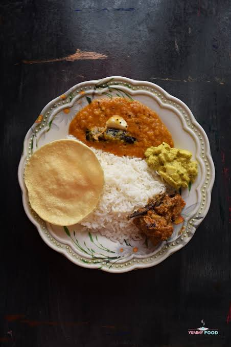
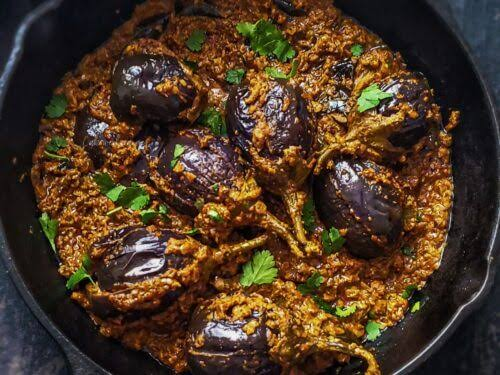
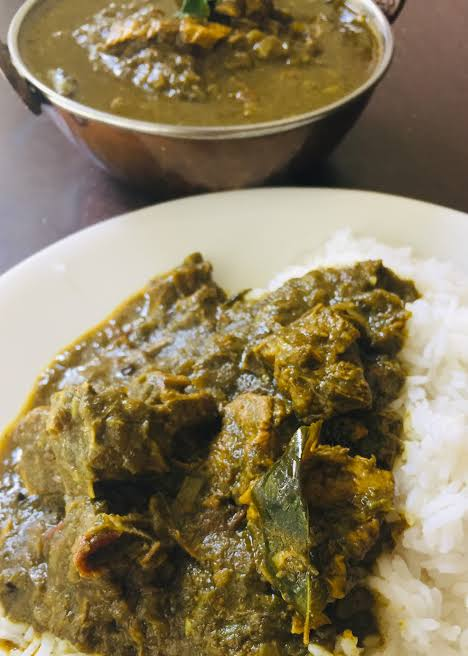
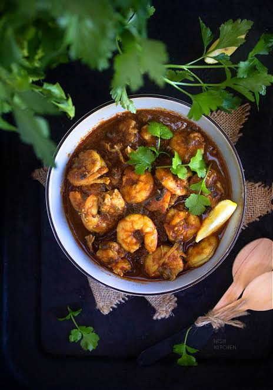
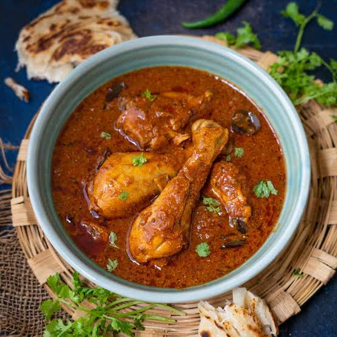
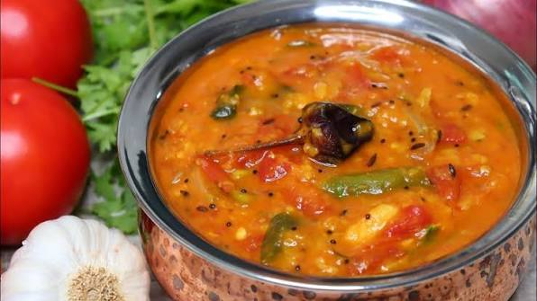
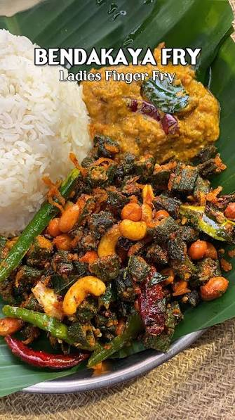
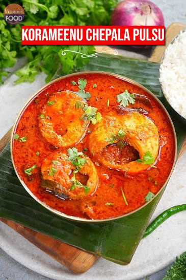

A traditional Andhra meal includes 2 cups of cooked rice, 1 cup of cooked toor dal, tamarind pulp, tomatoes, onions, green chilies, turmeric powder, red chili powder, mustard seeds, cumin seeds, curry leaves, garlic, vegetables of choice (such as drumstick, brinjal, or bottle gourd), salt, oil, coriander leaves, papad, and pickle.
Cook the rice until soft and fluffy. Prepare pappu by cooking toor dal with tomatoes and turmeric, then season it with mustard seeds, cumin seeds, garlic, red chilies, and curry leaves. Prepare sambar using cooked dal, vegetables, tamarind pulp, sambar powder, and seasoning. Make a simple vegetable curry by sautéing vegetables with spices until tender. Serve the hot rice with pappu, sambar, vegetable curry, papad, pickle, and a spoon of ghee.

Gutti Vankaya Kura is prepared using 8–10 small brinjals, ¼ cup roasted peanuts, 2 tablespoons sesame seeds, 2 tablespoons grated coconut, 1 tablespoon coriander seeds, 1 teaspoon cumin seeds, 1 teaspoon red chili powder, ½ teaspoon turmeric powder, tamarind pulp, jaggery (optional), salt, onions, garlic, curry leaves, mustard seeds, and oil.
Roast the peanuts, sesame seeds, coconut, coriander seeds, and cumin seeds, then grind them into a fine masala with chili powder, turmeric, tamarind, garlic, and salt. Slit the brinjals without cutting them completely and stuff them with the prepared masala. Heat oil, add mustard seeds and curry leaves, place the stuffed brinjals in the pan, and cook on low heat until they become tender. Add the remaining masala with a little water and simmer until the gravy thickens. Serve hot with steamed rice or chapati.

Gongura Mutton is made with 500 grams of mutton, 2 cups of gongura (sorrel) leaves, 2 onions, 2 tomatoes, ginger-garlic paste, green chilies, red chili powder, coriander powder, turmeric powder, garam masala, salt, oil, curry leaves, and coriander leaves.
Pressure cook the mutton with turmeric and salt until tender. Separately cook the gongura leaves until soft and mash them into a paste. Heat oil, sauté onions, ginger-garlic paste, green chilies, and tomatoes until soft. Add the spice powders and cooked mutton, then cook for a few minutes. Mix in the gongura paste and simmer until the flavors blend and the gravy thickens. Garnish with coriander leaves and serve with hot rice or chapati.

Royyala Iguru is prepared using 500 grams of cleaned prawns, 2 onions, 2 tomatoes, ginger-garlic paste, green chilies, turmeric powder, red chili powder, coriander powder, garam masala, curry leaves, coriander leaves, salt, and oil.
Marinate the prawns with turmeric and salt for 15 minutes. Heat oil in a pan and sauté onions, ginger-garlic paste, curry leaves, and green chilies until fragrant. Add tomatoes and cook until soft before mixing in the spice powders. Add the prawns and cook until they become tender. Simmer until the gravy thickens, garnish with coriander leaves, and serve hot with steamed rice.

Andhra Chicken Curry is made using 500 grams of chicken, 2 onions, 2 tomatoes, ginger-garlic paste, green chilies, turmeric powder, red chili powder, coriander powder, garam masala, curry leaves, coriander leaves, salt, and oil.
Heat oil and sauté onions, curry leaves, green chilies, and ginger-garlic paste until golden. Add tomatoes and cook until they become soft. Stir in turmeric, red chili powder, coriander powder, and salt. Add the chicken pieces and cook until they are coated with the masala. Pour in a little water, cover, and cook until the chicken is tender and the gravy reaches the desired consistency. Garnish with coriander leaves and serve with rice or chapati.

Tomato Pappu is prepared using 1 cup of toor dal, 3 tomatoes, 2 green chilies, ½ teaspoon turmeric powder, salt, mustard seeds, cumin seeds, garlic cloves, dried red chilies, curry leaves, oil or ghee, and coriander leaves.
Cook the toor dal with tomatoes, green chilies, turmeric, and water until soft. Mash the dal well. Heat oil or ghee, add mustard seeds, cumin seeds, garlic, dried red chilies, and curry leaves, then pour the tempering over the cooked dal. Mix well, simmer for a few minutes, garnish with coriander leaves, and serve hot with steamed rice and ghee.

Bendakaya Fry is made using 500 grams of fresh okra, 2 tablespoons of oil, 1 teaspoon mustard seeds, 1 teaspoon cumin seeds, ½ teaspoon turmeric powder, 1 teaspoon red chili powder, 1 teaspoon coriander powder, salt, curry leaves, and chopped coriander leaves.
Wash and dry the okra thoroughly before slicing it into small pieces. Heat oil in a pan, add mustard seeds, cumin seeds, and curry leaves, then sauté the okra on medium heat until it becomes tender and slightly crispy. Add turmeric, chili powder, coriander powder, and salt, and cook for a few more minutes. Garnish with coriander leaves and serve with rice and dal.

Andhra Fish Pulusu is prepared using 500 grams of fish pieces, tamarind pulp, 2 onions, 2 tomatoes, green chilies, ginger-garlic paste, turmeric powder, red chili powder, coriander powder, fenugreek seeds, mustard seeds, curry leaves, salt, oil, and coriander leaves.
Heat oil and temper mustard seeds, fenugreek seeds, and curry leaves. Add onions, ginger-garlic paste, and green chilies, and sauté until fragrant. Add tomatoes and cook until soft, then mix in turmeric, chili powder, coriander powder, tamarind pulp, and water to prepare the gravy. Bring it to a boil before gently adding the fish pieces. Cook without stirring too much until the fish is fully cooked and the gravy thickens. Garnish with coriander leaves and serve hot with steamed rice.
